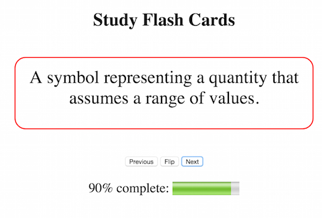

I became interested in computer programming while taking a course at City College of San Francisco -- we needed to write a few scripts to automate a task and I was very intrigued! I then took a programming class to explore my interest in coding, and have continued on this journey ever since.
I have been living in the Bay area for the last 9 years and moved to Oakland 3 years ago. Living in Oakland has opened up a world of creativity and passion for coding. I have had the honor and opportunity to provide mentorship for several types of organizations. It has been wonderful to be involved in providing support of developing skills and helping individuals feel empowered and more confident.
I am excited and looking forward to embark on a career where I can continue to merge my love of coding and mentoring through community outreach. I look forward to serving others and also getting a chance to help others find their own love of coding.
Over the course of the next couple of months, I plan gain a deeper understanding of the JavaScript programming language, meet other developers, and improve upon my experience using different development tools.
Jan 2016 - present
CodePath is an education technology startup that provides free, accelerated engineering classes for students and professional developers and designers. The curriculum has been used to teach thousands of engineers across Facebook, Google, Apple, Microsoft, and many of the top technology companies and high growth startups in Silicon Valley.
Their mission is to provide college students from diverse backgrounds with free access to the same programming classes taught inside the world's top technology companies.
City College of San Francisco was elected to participate in the student-lead pilot program (extended to 20 universities/colleges throughout the United States). Each week, a new aspect of the Swift programming language is learned, and immediately applied to a real-world app.
Sep 2015 - Jan 2016
A career-driven coding program based in downtown Oakland. Emphasis is placed on applied experience through project-based learning and implementing agile workflow. Projects cover the full range of development using JavaScript and utilizing MEAN (MongoDB, Express, AngularJS, and NodeJS).
Acted as a facilitator for the preparatory course for Telegraph Academy. Was available to answer questions for students taking the prep course in both group and individual settings. On occasion, would answer questions for students attending the online course (livestream version).
April 6 - May 7, 2015
Part-time (4 days a week) prep course that introduces students to JavaScript fundamentals and algorithmic thinking.
January 1st - 31st, 2015
A month-long free programming class geared towards beginners.
YouTube VideoWebpage Design with HTML5, CSS3, and JavaScript
Implementation of database schemas and data models using PostgreSQL and MongoDB
{kind=link}
{kind=link}
{kind=link}